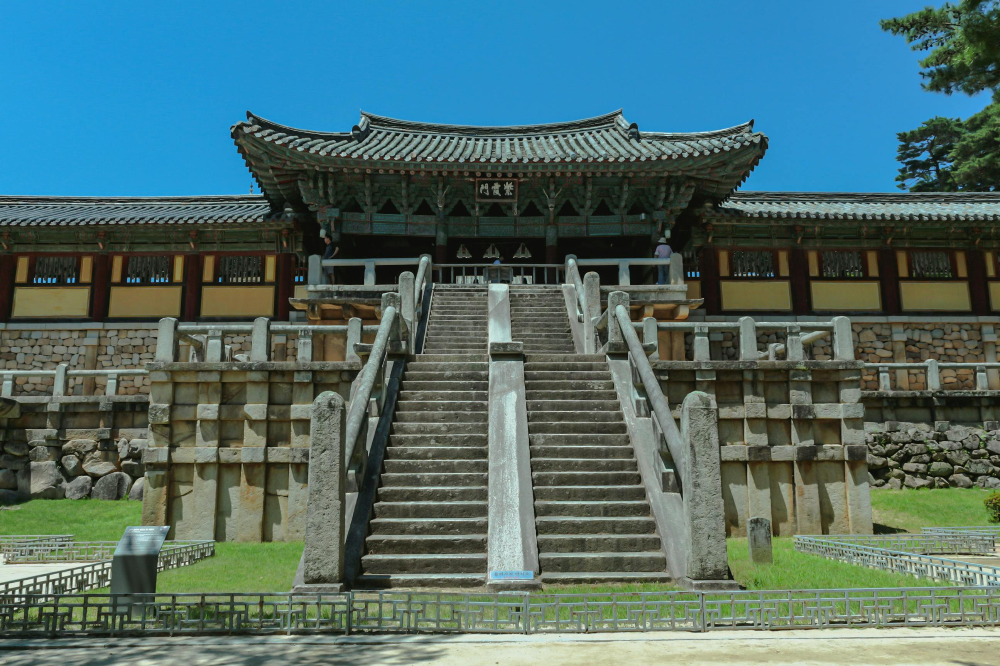

Templo Bulguksa
Gyeongju — Siglo VIII — Patrimonio UNESCO
Construido en el año 528 y reconstruido en su forma actual en el siglo VIII durante la dinastía Silla, Bulguksa es uno de los templos budistas más importantes de Asia Oriental.
Simboliza la búsqueda de la iluminación. Sus pagodas de piedra Dabotap y Seokgatap, de estilos completamente distintos, son consideradas obras maestras del arte coreano y están declaradas Tesoro Nacional.